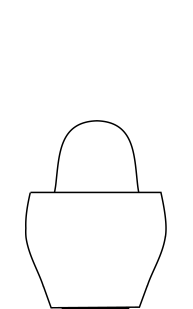
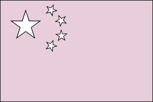
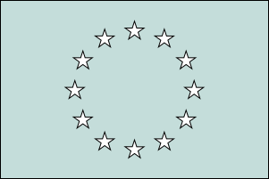
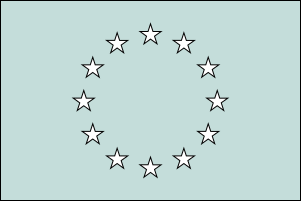
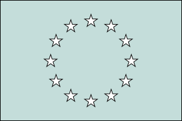

Women art historians have often remained unseen among the numerous layers of intellectual contributions constructing the field of art history.
The image of the matryoshka conjures up the unwrapping of layers, uncovering what is underneath, what is inside.
Peeling away the layers in the attempt of revealing the role of women in art history is the aim of this data-driven project.
At the beginning, every matryoshka doll looks similar to the other.
A solid and unique piece of wood, softly shaped and a little bit shiny.
With decorations all around.
If you have ever played with one of these dolls, you know that things are not as they may appear from afar.
If you look closer, you can see that what once appeared to be one now breaks into two perfectly joint halves.
Let’s take a moment to observe things from an external perspective.
And take a look at this superficial division.
What can we see?
Let's start with some numbers.
The total number of known art historians in the world is 15212.
10484 of them are men.
4726 of them are women.
This means that only the 31% of art historians are women.
01
02
03
04
05
06
07
08
09
10
11
12
13
14
15
16
17
18
19
20
21
22
23
24
25
26
27
28
29
30
31
32
33
34
35
36
37
38
39
40
41
42
43
44
45
46
47
48
49
50
51
52
53
54
55
56
57
58
59
60
61
62
63
64
65
66
67
68
69
70
71
72
73
74
75
76
77
78
79
80
81
82
83
84
85
86
87
88
89
90
91
92
93
94
95
96
97
98
99
100
We observed the doll and noticed how different parts make up the complete external decoration and in what percentage.
Are we sure we are not missing smaller details?
We looked for people whose gender is described as male or female.
What about art historians who do not feel represented by gender binarism?
Let's take a look at our numbers again.
The total number of known art historians in the world is 15212.
10484 of them are men.
4726 of them are women.
2 of them are non-binary.
This means that non-binary people represent only the 0.01% of the total number of known art historians in the world.
It is now time to narrow and, at the same time, go deeper inside our search.

Matryoshka is known to be a symbol of Russian culture.
Many do not know that nesting dolls have been used as symbols for hundreds of years in many different countries. From China to Japan, they finally spread throughout eastern Europe.


Wanting to go a little more into detail, we decided to focus our study on the European status of gender distribution among art historians, analyzing it from a geographical perspective.
Percentage of female art historians
50%
100%
Percentage of male art historians
As expected, most of the countries report a majority of male art historians.
But there are also a few exceptions!
Estonia scores 51.4% of female art historians.
Slovenia scores a surprising 57.7% against the general trend.
If we exclude the outliers, we may say that the observed scenario was pretty predictable.
However, data collected about European distribution can be very useful, following our research principle which goes from the most general to the more specific.
Let’s see more in detail how we can use them by looking at one of the most important issues of gender inequality: occupation.
Art history is one of the most interdisciplinary fields in the humanities and it is related to several other sectors. Accordingly, art historians are multifaceted figures, usually having more than one job.
For this reason, we looked for the most common occupations among art historians for each gender.
The results are pretty clear.
Most art historians, both women and men, occupy positions that are mostly related to cultural institutions.
Being recognized as a member of one of these institutions can therefore be considered as a sign of academic recognition and public prestige.
Let’s see what are the rates for male and female art historians inside european academies and organizations.
In this case, we will merge data obtained from the geographical analysis
with data demonstrating visibility of women inside academic institutions.
What do you expect from this comparison?
Do you think that the proportions will remain the same?
Select a country and see!
As you can see, proportions are not respected at all.
More precisely, women's visibility inside academic institutions doesn't generally reach half of their visibility for each country.
Let's go deeper!
Taking these results into consideration, let’s see if a different result can be observed by analyzing visibility from a different perspective.
It's time to turn the tables!
Let’s substitute the geographical coordinates with temporal limits
and translate the academic visibility into authorial recognition.
Let’s start by looking at the timeline.
We will see how many art historians are going through the most productive period of their career along intervals of twenty years.
As time goes by, the percentage of females grows almost linearly. Proportionally, the gender gap is gradually shrinking.
Let’s now add the actual number of scholarly publications produced during those years to the equation.
Despite the aforementioned evolution in female activity, the production of scholarly works and therefore their visibility remains almost unchanged.
Data show that the gender inequality gap in the art history field is real.
Starting from this general trend, let’s consider a more specific example from the real world in which the results so far observed can be tested and questioned.
ARTchives
The objective of ARTchives is to create a knowledge graph of art historians’ archives for historiographical research purposes, so that users can identify and retrieve archival fonds relevant to their studies, and researchers can answer research questions related to historiographical topics, such as: historians’ relations, debate on research topics, bibliographic sources addressing such topics.


 
